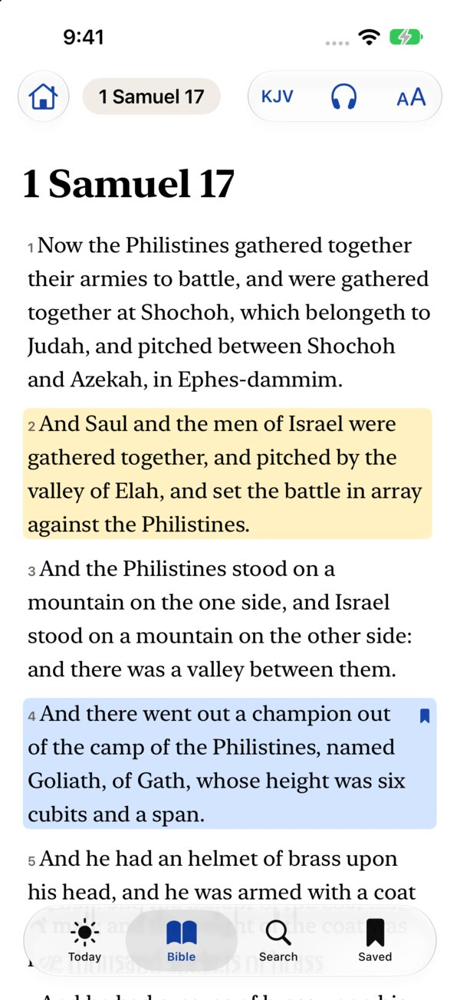
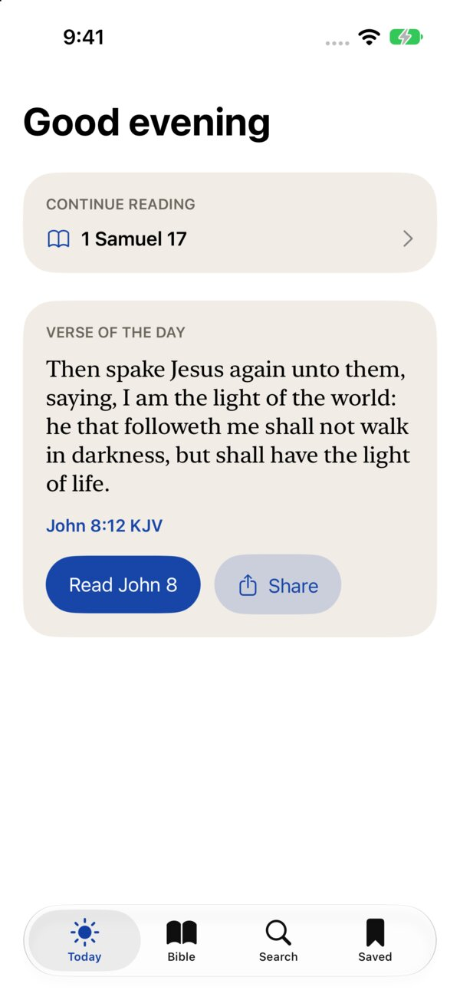
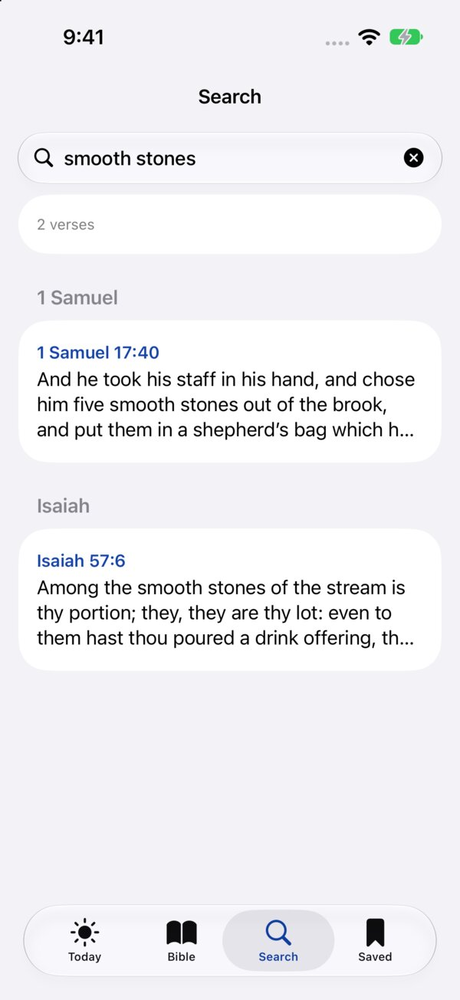
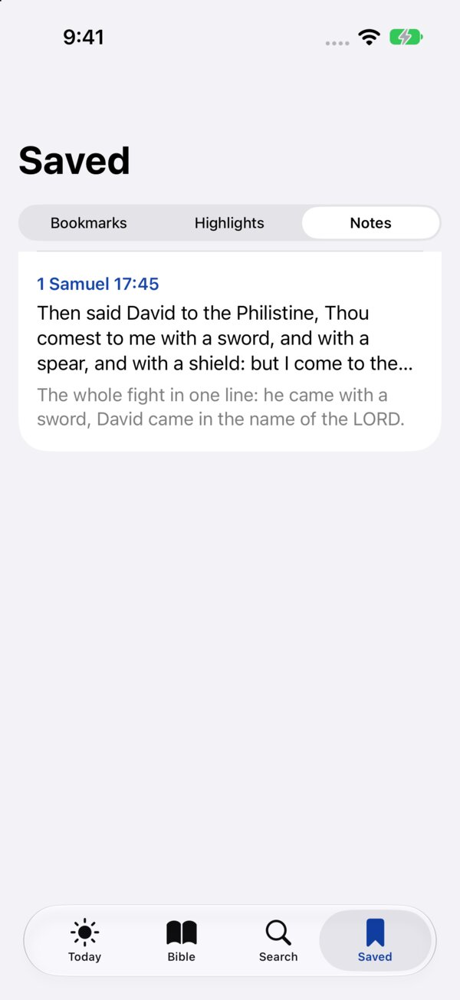

Read · Moses, Exodus 32
A page that reads like a page
Sans or serif, three line spacings, any size. Tap the reference to jump to any book and chapter. The house brings you back to the valley of Elah.
Elah · Nine Bibles, offline, on your iPhone, iPad and Mac
It opens on David and Goliath.
Free. Works offline. No account, no ads.
1 Samuel 17:40
Nine whole Bibles sit on your phone, the King James and the Berean Standard among them. Every chapter opens at once, with or without a signal.
Read · Moses, Exodus 32
Sans or serif, three line spacings, any size. Tap the reference to jump to any book and chapter. The house brings you back to the valley of Elah.
Listen · David and Saul, 1 Samuel 18
Your device reads it aloud and outlines the verse it is on. Skip a verse, change the speed, keep it going with the screen off.
Keep · Noah, Genesis 8
Press and hold a verse. Four colours, a bookmark, a note. Everything you marked waits in Saved, in canon order, on your device only.
Map
Seven thousand arcs from Genesis to Revelation. Drag along the chapters to light one up and open what it reaches.
Engravings
Gustave Doré's 1866 plates, printed in blue halftone where their story is told.
Versions
KJV, BSB, ASV, New Heart, Young's, Darby, Webster, Basic English and the Geneva. Switch at the top.
Search
Type a few words. Results come back by book in a blink.
Today
Pick up where you left off, or start with today's verse.
Share
A square image on the navy of the icon, under its arcs, ready for any chat.
1 Samuel 17:45
Thou comest to me with a sword, and with a spear, and with a shield: but I come to thee in the name of the LORD of hosts.




Get it
One app for iPhone, iPad and Mac. The App Store listing is on its way. Until then, read online.
iOS 17 and up · Daniel 6
Nine Bibles offline. Listen, highlight, write notes.
App Store sooniPadOS 17 and up · Genesis 12
A wide reading column in any orientation.
App Store soonmacOS 14 and up · Judges 16
The same app in a window.
App Store soonAny browser · 1 Samuel 17
Nine versions as real text, opens on David and Goliath.
Read online →